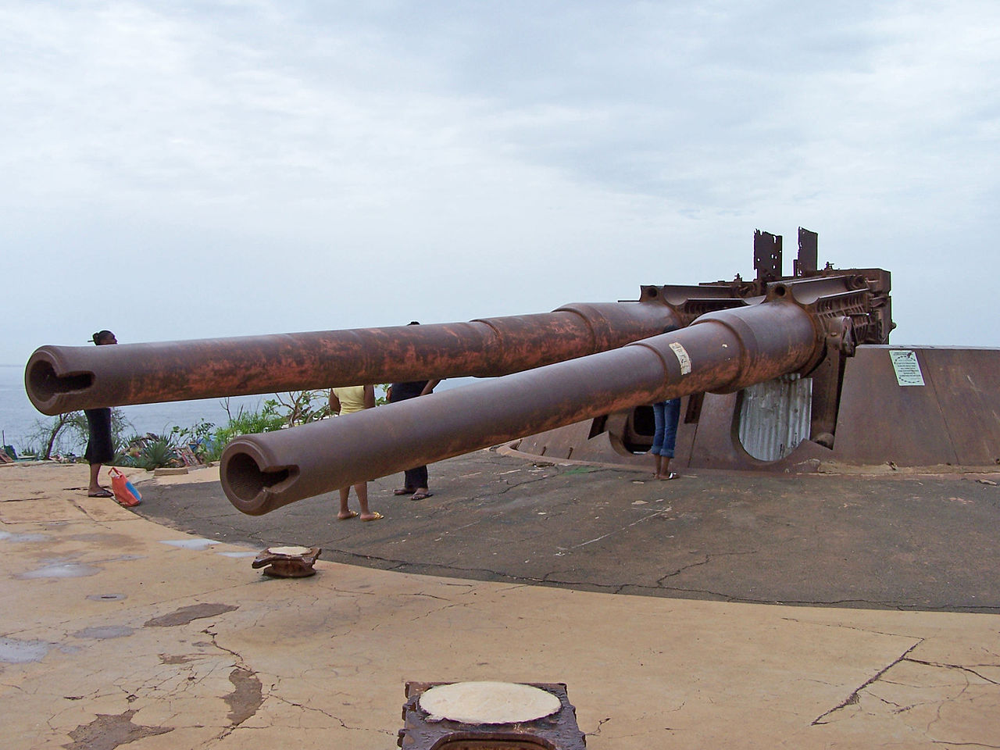
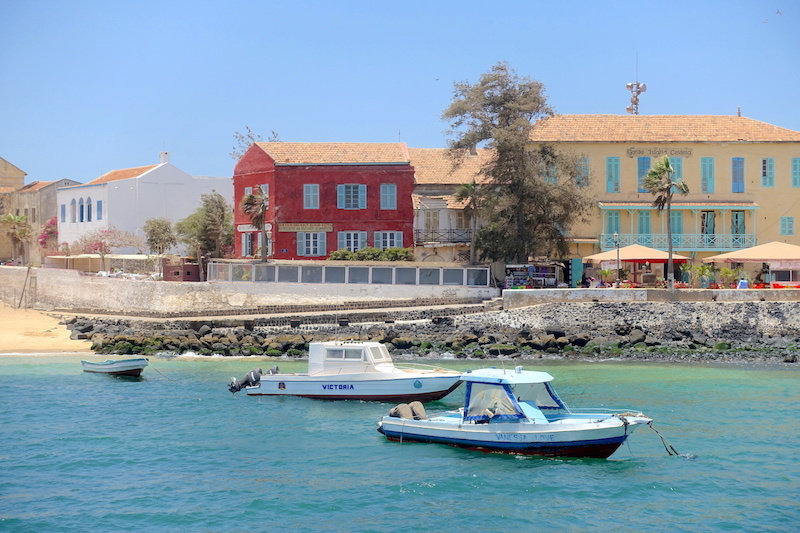

<
Magnifique, ancienne, élégante, belle, agréable, galante, grandiose… Visiter Bruxelles se fait forcément aux côtés d’une longue liste de superlatifs.
Et encore, aucun ne suffit à décrire Bruxelles et sa splendeur.

Patrimoines
Vous ne pouvez envisager de visiter Gorée sans voir ce patrimoine
les canons
Les visiteurs d'un jour qui découvrent le canon ont tous (ou presque) une phrase d'émerveillement face à ce "monstre" métallique d'une autre époque.
Un guide sur l'île nous indique qu'il avait une portée de "14 km et aurait permis à la France de Vichy de couler un bateau anglais le 23 septembre 1940".
Pour atteindre le canon un passage par la ruelle des artistes s'impose. Les peintres et autres créateurs d'art y exposent leurs œuvres.
HOMMAGE A BLAISE
Longeant la place centrale de Gorée, non loin de la mairie, l'île rend hommage à l'un de ses plus illustres fils : Blaise Diagne.
Né le 13 octobre 1872 à Gorée au Sénégal, il est le premier député africain élu à la Chambre des députés française.
Juste en face de son buste une autre stèle à la mémoire des médecins et pharmaciens qui ont perdu la vie lors de l'épidémie de fièvre jaune de 1878.

Important a Savoir
Une traversée paisible bercée par le vent de l'atlantique nord.
L'arrivée et le départ de la chaloupe sont des moments très attendus car l'embarcation est le seul moyen de ravitailler l'île et de la visiter.
Gorée est la seule commune du Sénégal "100% carbone free" : aucune voiture n'y circule !Gorée vous accueille avec sa plage située non loin du débarcadère.
Les plages de Gorée sont parmi les rares de Dakar à être autorisées à la baignade toute l'année.
Alors chaque week-end, la jeunesse Dakaroise et les visiteurs viennent faire trempette dans les eaux turquoises qui entourent l'île.
Après la baignade ou même avant, un petit tour de l'île à travers les petites ruelles typiques de l'île permet de découvrir les merveilles de Gorée.